Visitors look into the ReLeaf bioreactor enclosure at the Green Media Forum on 5 September 2026. It holds the parts whose development this page follows.
ReLeaf works only if every stage works and hands on to the next. This page covers what success means for the chain, the criteria for each stage, the first prototypes that failed, and how each part was rebuilt.
SectionProject
Written byProject team
Last updated28 September 2026
StatusDraft
Contents
On this page
Success definition
What does success for the entire system look like?
ReLeaf is designed to provide plants with on-demand protection against
environmental stress by producing protectants directly where they are needed.
Rather than relying on a single component, ReLeaf connects multiple biological,
hardware, and computational systems into one continuous process.
A successful ReLeaf system must therefore do more than demonstrate that each
individual component works. Stress must first be detected, the system must
respond appropriately, the engineered bacteria must produce the intended
protectant, the bacteria must remain contained, the protectant must reach the
plant, and the plant must ultimately benefit.
This led us to define ReLeaf’s success as a complete chain with 6 components:
1DetectAIoT Sensor
2ActivateGreen Light Signal
3ProduceB. subtilis CcaSR
4ContainHollow-Fiber Membrane
5DeliverProtectant Secretion
6ProtectPlant Protected
Figure 1. The six stages of ReLeaf, in order. Under each stage is the part of the system that carries it, as labelled in the team’s project-flow figure: the AIoT sensor detects stress, green light activates the circuit, engineered B. subtilis with CcaS/CcaR produces the protectant, the hollow-fiber membrane keeps the cells in, the secreted protectant is delivered, and the plant is protected.
If one part of this chain fails, the success of the other components may not
be enough to achieve the final goal. With so many interconnecting systems, how
can we say with certainty that ReLeaf is successful?
What does ReLeaf need to accomplish?
At the system level, ReLeaf needs to accomplish six major functions:
1Detect
Identify when the plant is experiencing a relevant environmental stress.
2Activate
Convert the detected stress signal into the appropriate production response.
3Produce
Produce the intended plant protectant using the engineered bacterial system.
4Contain
Keep the engineered bacteria contained within the bioreactor while allowing the protectant to leave.
5Deliver
Transfer a sufficient amount of protectant from the bioreactor to the plant.
6Protect
Produce a measurable improvement in plant performance under stress.
System validation framework
To determine whether ReLeaf works as a complete system, we developed a system
validation framework based on the six functional stages. For each stage, we asked:
What does ReLeaf need to accomplish?
What can be quantitatively measured?
What level of performance should be considered successful?
What evidence is needed to support the claim?
How does this stage affect the rest of the system?
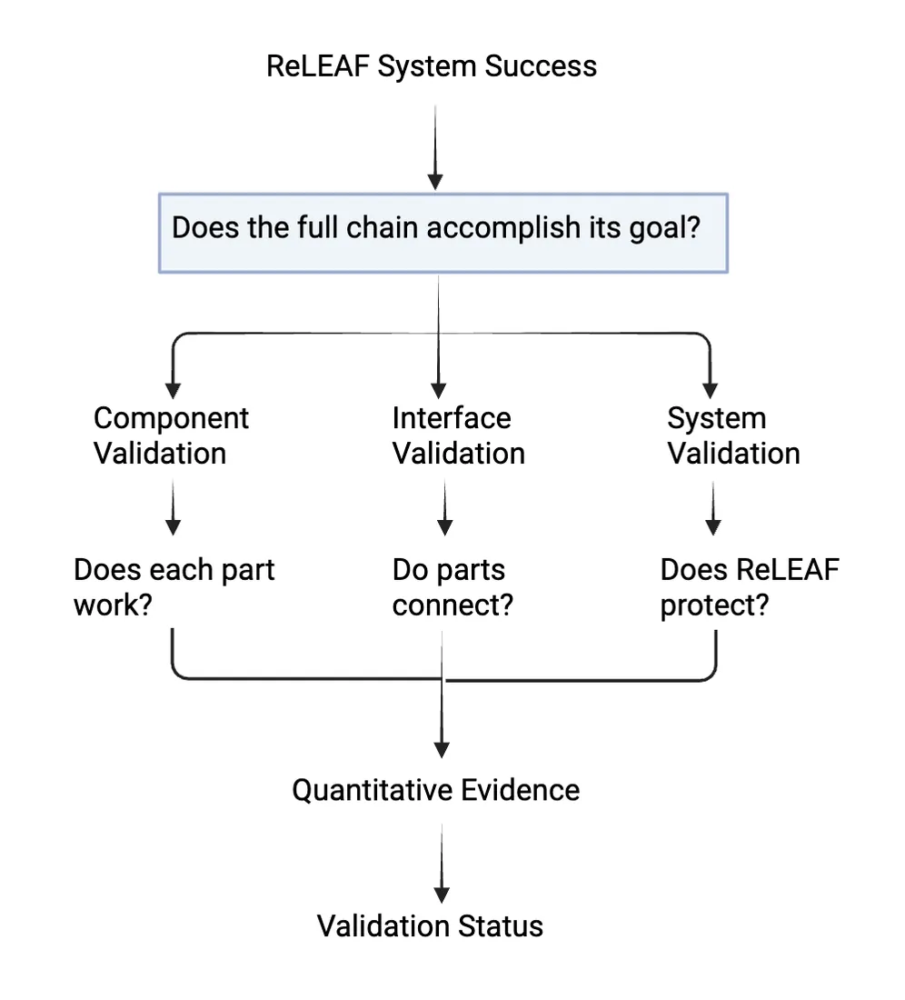
Figure 2. How the chain is judged. Component, interface and system validation each ask a different question. Their answers are the quantitative evidence behind every status in the tables below.
Success criteria
To effectively determine what counts as ‘successful’, we defined and
quantified metrics for the various components of all 6 stages. These
experimentally testable criteria allow us to determine whether the
corresponding function has been demonstrated.
Success criteria for stage 1, Detect.
Functional requirement
Metric
Acceptance criteria
Evidence
Current status
Sensors can identify target environmental stresses
Detection accuracy
Sensor correctly identifies the presence/absence of the target stress with ≥90% accuracy across predefined test conditions.
Stress sensor vs. known stress condition
Awaiting data
Detect stress consistently, produce repeatable readings under the same conditions
Measure variation/CV
Repeated measurements under identical conditions have CV ≤10%.
Repeated sensor measurements
Awaiting data
Detect stress within a useful timeframe
Detection response time
Stress detection occurs within a timeframe that still allows the downstream system to respond before the intended treatment window closes. Target: ≤60 sec.
Time-series sensor data
Awaiting data
Distinguish stress severity, sensor output changes appropriately with increasing stress
Signal vs stress intensity
Sensor signal shows a monotonic and reproducible relationship with at least 3 predefined stress levels.
Sensor measurements across stress levels
Awaiting data
Success criteria for stage 2, Activate.
Functional requirement
Metric
Acceptance criteria
Evidence
Current status
Convert stress information into the correct activation signal
Activation accuracy
The system activates under predefined stress conditions and remains inactive under predefined non-stress conditions. ≥90% correct activation decisions across test conditions.
Sensor/controller integration test
Awaiting data
Activate within an appropriate timeframe
Detection → activation delay
Detection-to-activation delay is ≤3 min.
Controller logs
Awaiting data
Produce the intended light signal, with required wavelength and intensity
Wavelength, irradiance
Wavelength range of green light is 525 nm ±30 nm. Wavelength of red light is 660 nm ±30 nm.
Light measurements
Preliminary
Maintain activation reliably, light signal remains within required range during operation
Light intensity variation
Light intensity does not vary by over 10%.
Continuous light monitoring
Not yet shown
Success criteria for stage 3, Produce.
Functional requirement
Metric
Acceptance criteria
Evidence
Current status
Engineered bacteria respond to the light signal
Fold-change in protectant concentration between induced and non-induced conditions
Band size of LPA testing samples matches the according protectant. Statistically significant increase in protectant concentration under the activating condition
Anti-His ELISA
Awaiting data
Produce the intended protectant
Protectant concentration
Detectable target protein above the assay’s validated detection limit
Anti-His ELISA
Preliminary
Produce the right amount of protectant
Protectant concentration
Production reaches the minimum concentration required at the plant, after accounting for downstream transfer/dilution.
Anti-His ELISA
Not yet shown
Production is controllable, changes appropriately with activation conditions
Production under green vs. red/no-light conditions
Activating condition produces significantly greater production than non-activating controls
ELISA + appropriate controls
Awaiting data
Production remains stable, output does not substantially decline during intended operating period
Output retention over time
Production remains within ≥80% of initial output over the intended operating period.
Long-duration reactor run
Awaiting data
Success criteria for stage 4, Contain.
Functional requirement
Metric
Acceptance criteria
Evidence
Current status
Retain engineered bacteria inside the bioreactor
Downstream CFU/cell concentration
No detectable viable engineered cells in the output stream above the assay’s validated detection limit.
Downstream plating/cell detection
Preliminary
Maintain membrane integrity
Pressure/flow change, leakage
No evidence of membrane failure, abnormal leakage, or loss of containment during the intended operating period.
Pressure and flow monitoring
Preliminary
Maintain containment over time, no leakage
Leakage over time
Containment criterion is satisfied throughout the entire intended run.
Multi-day reactor test
Awaiting data
Prevent contamination of the output stream
Positive/negative culture results
A membrane/flow/pressure abnormality or downstream biological signal can be detected before continued operation creates a larger problem.
Downstream culture test
Preliminary
Success criteria for stage 5, Deliver.
Functional requirement
Metric
Acceptance criteria
Evidence
Current status
Protectant crosses the membrane
Protectant concentration downstream
Target protectant is detectable and quantifiable on the output side of the membrane.
Output-side assay
Preliminary
Deliver sufficient protectant
Delivered concentration
Output concentration reaches the minimum plant-effective concentration established from plant experiments/literature.
Output assay + plant-response requirement
Awaiting data
Deliver consistently, output does not fluctuate beyond acceptable range
Concentration CV
Not yet defined
Repeated/time-series samples
Awaiting data
Maintain delivery during operation, transfer does not deteriorate substantially during a run
Transfer efficiency over time
Delivery concentration remains within ±20% of the intended operating range during steady-state operation.
Time-course sampling
Awaiting data
Deliver at an appropriate rate, protectant reaches plant quickly enough relative to stress progression
Delivery rate
A measurable and reproducible fraction of produced protectant reaches the output stream. Target: ≥50% transfer efficiency could be a starting proposal.
Flow + concentration measurements
Awaiting data
Success criteria for stage 6, Protect.
Functional requirement
Metric
Acceptance criteria
Evidence
Current status
Protectant reaches the plant at an effective dose, produces a measurable biological effect
Plant response relative to stressed control
Treated stressed plants show a statistically significant improvement in at least one predefined primary plant-health metric compared with stressed untreated controls.
Plant experiment
Not yet shown
Improve plant performance
Biomass/chlorophyll/growth
Treatment produces at least a 20% improvement relative to the stressed control in the primary metric, unless literature or baseline variability supports another threshold.
Controlled plant experiment
Awaiting data
Protection is dose dependent or otherwise predictable
Response vs dose
Not yet defined
Dose-response experiment
Awaiting data
Timing is appropriate, affects protection in a useful/appropriate way
Response vs treatment timing
At least one treatment dose/timing condition produces a reproducible protective effect, and the relationship between dose/timing and response is characterized sufficiently to identify an effective operating range.
Timing experiment
Awaiting data
Effect is reproducible
Effect size/CV/statistical significance
The protective effect is observed across independent biological replicates/experiments.
Replicated plant experiment
Awaiting data
Status as of 28 September 2026. What each status rests on is in the criteria validation table at the end of this page.
How three of the metrics are calculatedCoefficient of variation, output retention and transfer efficiency, written out.
Coefficient of variation of \(n\) repeated readings \(x_i\) taken under identical conditions, with mean \(\bar{x}\) and standard deviation \(s\):
Output retention, the production at time \(t\) against the initial output \(P_0\); the criterion asks for \(R(t) \ge 0.8\) over the operating period:
\[ R(t) = \frac{P(t)}{P_0} \]
Transfer efficiency, the fraction of the protectant produced in the culture loop that reaches the output stream, where \(C_{\text{out}}\) is the output concentration and \(Q_{\text{out}}\) the output flow rate:
Before we could build a successful integrated system, we had to determine what
did not work. Each part of our project began with an initial prototype that,
inevitably, failed. However, these early experiments and iterations allowed us
to identify weaknesses, understand how they affected the larger system, and
improve upon them.
We organized these early failures by subsystem and evaluated each one with four
questions:
What went wrong?
→
Why did it fail?
→
What was the consequence?
→
What did we learn from it?
Our initial prototypes
One card per subsystem. Open a card for its failure, cause, consequence and lesson; click a photo to enlarge it.
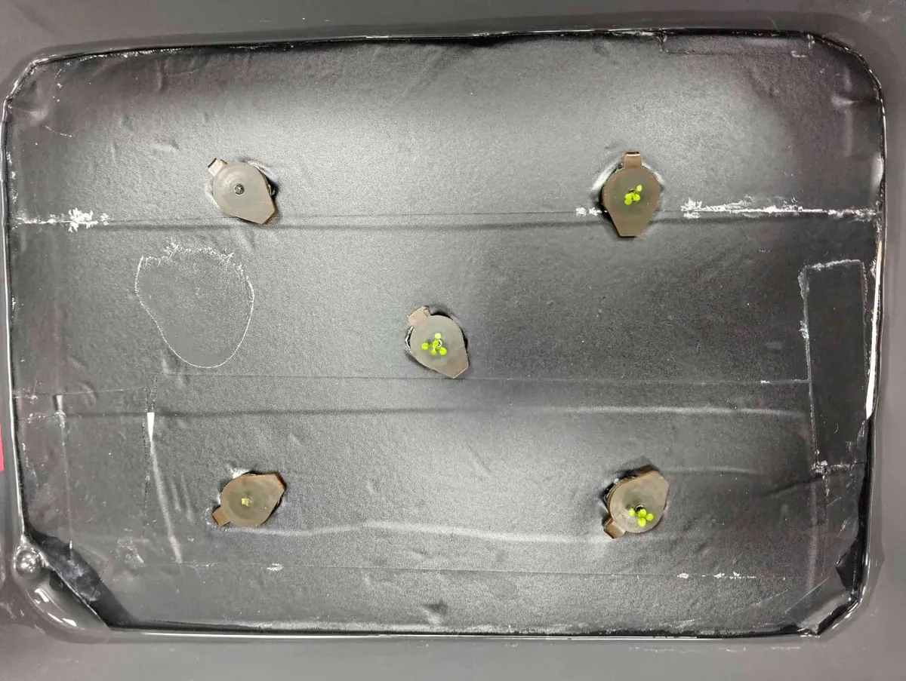
Plant system
Hydroponics
Our first hydroponics box prototype, where we put black tape on a styrofoam board and punched holes inside to place the seed holders. We followed a published paper and a YouTube video to create this box. The main issue we experienced was contamination.
Failure, cause, consequence, lesson
Failure
The prototype established the basic concept, but contamination became the major limitation, preventing reliable plant growth.
Cause
An improvised container and a hand-punched board gave us little control over cleanliness or hole size.
Consequence
Only 4 of 10 seeds germinated (Prototype 1 record), too few to compare treatments.
Lesson
At this stage, we recognized that both physical consistency and environmental cleanliness needed to be addressed.
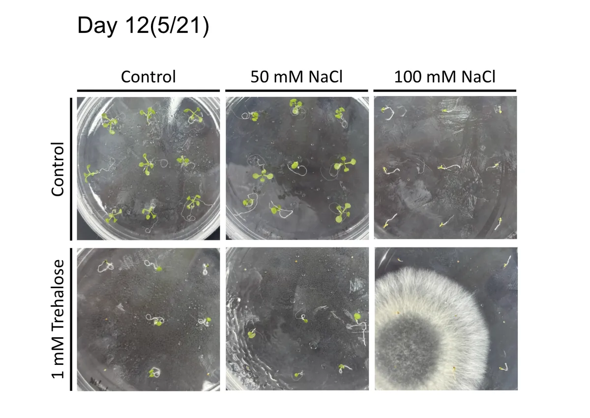
Plant system
Agar
We began with simple NaCl and trehalose combinations to determine whether agar-grown Arabidopsis could provide a controlled system for studying salinity stress and protectant efficacy. 100 mM NaCl was too severe, while the initial protectant treatments did not produce obvious visual differences.
Failure, cause, consequence, lesson
Failure
However, inconsistent germination and frequent contamination made it difficult to obtain reliable results.
Cause
Our early experiments showed that the outcome depended heavily on both the salt and protectant concentration. We also realized that simply counting how many seedlings were growing was not sensitive enough.
Consequence
At some concentrations, trehalose itself inhibited plant growth, while at others, we could not observe a clear protective effect.
Lesson
We switched to vertical agar plates so that root growth could be traced and measured with ImageJ, giving us a quantitative readout instead of relying on visual differences.
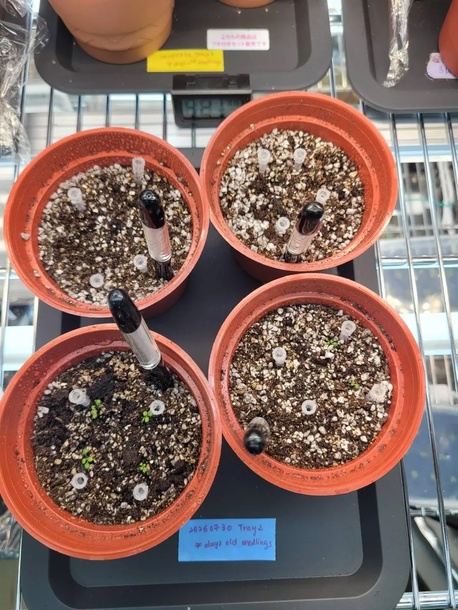
Plant system
Soil
Peat, perlite and vermiculite, four trays, watered on a two-person shift roster. Salt behaves completely differently here. The first attempt built up 25 mM per day toward 100 mM, a gradual ramp proposed by Dr. Verslues. Prof. Cheng’s assessment, recorded on 2 September, was blunt: for a month-old plant that dose is too mild, and worse, watering between doses washes the salt back out instead of letting it accumulate.
Failure, cause, consequence, lesson
Failure
The salt ramp did not stress month-old soil plants enough.
Cause
The dose was too mild for the plants’ age, and watering between doses washed the salt out.
Consequence
The soil plants were not stressed enough to show whether a protectant helps.
Lesson
In soil, the salt dose has to match the plant’s age and be applied so that it accumulates.
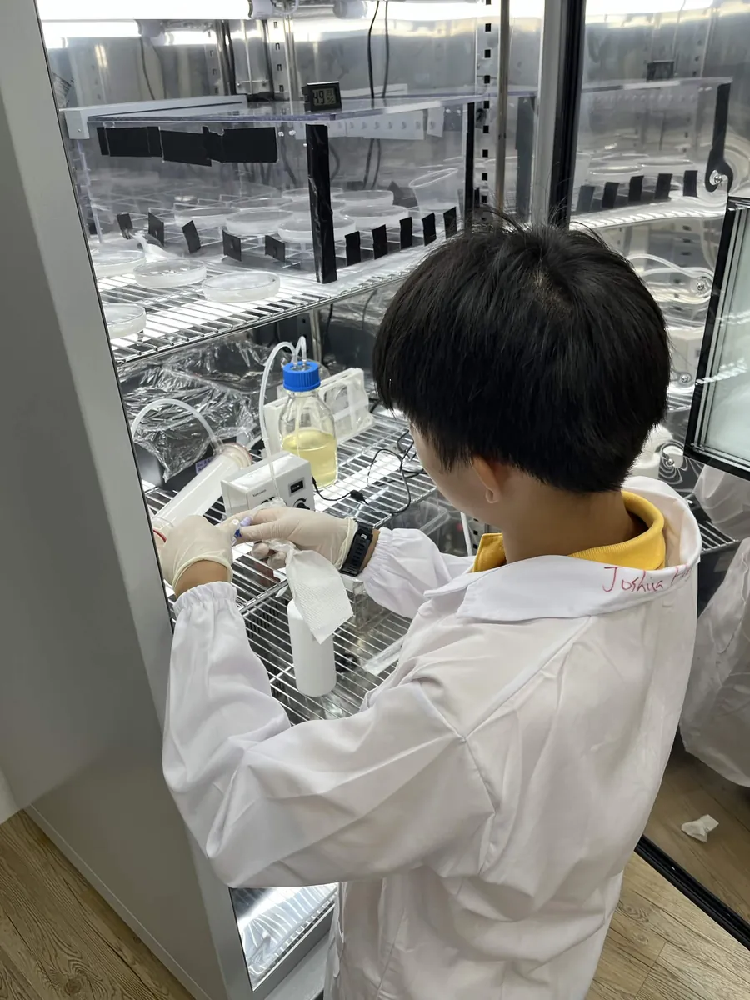
Bioreactor and hardware
Bioreactor
The first bioreactor prototype tested whether a continuous-flow loop could circulate B. subtilis through a PES hollow-fiber membrane. The system consisted only of a 300 mL culture reservoir, membrane cartridge, peristaltic pump, and luer valve. The system reached 94 mL/min, but the run ended early due to leakage at the pump head, demonstrating that containment depended on the entire fluidic loop, not just the membrane.
Failure, cause, consequence, lesson
Failure
A leak developed around the pump head, forcing us to stop the experiment early. We also observed differences between the OD600 measured in the tubing and in the reservoir, suggesting that the culture was not evenly mixed.
Cause
Weak tubing connections at the pump head, and no stirring in the reservoir.
Consequence
The run stopped before it could show that the loop keeps the culture contained over time.
Lesson
These failures showed us that simply circulating the culture was not enough; the reactor also needed reliable connections and effective mixing.
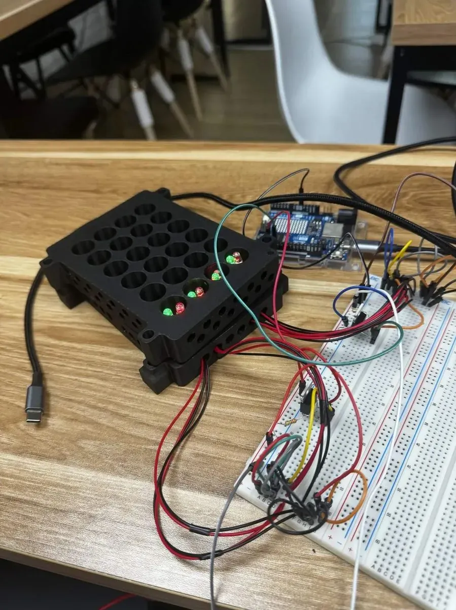
Bioreactor and hardware
DiOPAL
Bare stack on the bench: LED holder and tube holder, driven straight from a breadboard. Only a few channels wired; no enclosure and no light shielding yet.
Failure, cause, consequence, lesson
Failure
This established the basic idea of switching between green and red light, but it was not yet suitable for quantitative comparison.
Cause
Different LEDs could produce different outputs, and the cultures were still exposed to ambient light.
Consequence
A difference between conditions could have come from the LEDs or the room rather than from the light dose.
Lesson
This measurement revealed another source of variation: nominally identical LEDs did not necessarily produce identical outputs. We also realized that controlling the LEDs alone was not enough.
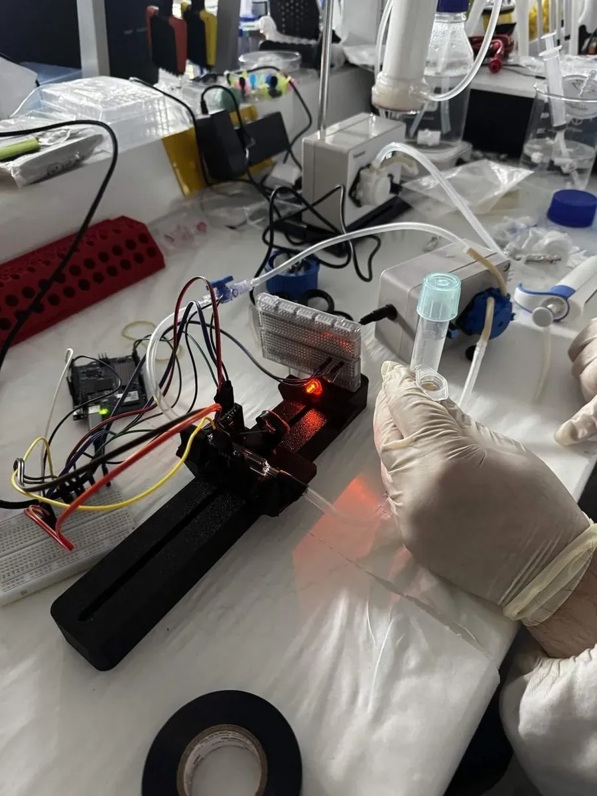
Bioreactor and hardware
Photometer
The first build placed the optical path horizontally, with each component independently adjustable on a rail. Readings fluctuated severely. Gas bubbles accumulated inside the flow cuvette and passed through the beam, and lens and beamsplitter mounts were loose enough that alignment shifted during handling.
Failure, cause, consequence, lesson
Failure
However, the readings fluctuated significantly.
Cause
We traced this to two problems: bubbles were accumulating in the flow cuvette and passing through the light path, while the adjustable optical components could shift out of alignment.
Consequence
The readings could not yet be read as OD600, so the culture still had to be sampled by hand.
Lesson
In our fourth iteration, we moved from an adjustable prototype toward a reproducible instrument.
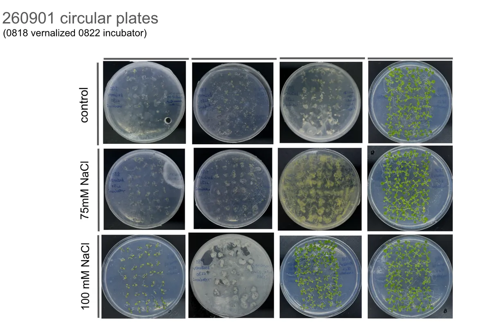
Genetic circuit and production
ACCD production
Tested ACCD produced by the engineered Bacillus subtilis on agar-grown Arabidopsis. The experiment encountered contamination, making it an early failure that showed the production-to-plant testing workflow still needed improvement.
Failure, cause, consequence, lesson
Failure
However, both Set 8 trials were invalidated by bacterial contamination, and a Western blot also found no detectable ACC deaminase in the engineered B. subtilis.
Cause
Early characterization revealed that circuit activation and protein production could not simply be assumed from one another.
Consequence
We therefore could not use these experiments as evidence that ACC deaminase protected the plants.
Lesson
We needed evidence at every stage: signal response → ACCD expression → ACCD activity → sufficient production → measurable plant protection.
Outreach
Expert engagement
Our first attempt at communicating with professionals back in March to get feedback on our project idea. Dr. Lin advised us to consider not using a kill switch, changing the target plant (which was originally Medicago), consider using hydroponics, and shift focus to seedling-stage testing.
Failure, cause, consequence, lesson
Failure
At first, the project was broad, with multiple stresses, Medicago, hydroponics, and several possible ways of testing plant responses.
Cause
We had not yet narrowed the plant, the stress or the way we would test them.
Consequence
We could not yet say what a successful test would look like.
Success for ReLeaf is more than meeting a set of specific criteria, however.
Throughout our project, we encountered unexpected challenges, revised our ideas,
learned from failure, and discovered new ways for our work to create value. From
building our first hydroponics prototype based on a published paper and YouTube
video to developing a design that was later adopted by a professor for use with
her students, each step of our journey brought us somewhere we had not initially
planned to go. In this section, we look beyond our final quantitative results to
the moments, challenges, and outcomes that shaped ReLeaf, and celebrate how far
our project has come.
Pick a subsystem. Each one runs from its first attempt, through the problem each version exposed, to where it stands now (the filled step).
We first met with Professor Cheng Mei-Chun of NTU in March, before we had established a plant-growth protocol or built a hydroponic system. She introduced us to how her group grows seedlings hydroponically, giving us our first direction toward growing Arabidopsis thaliana in water.
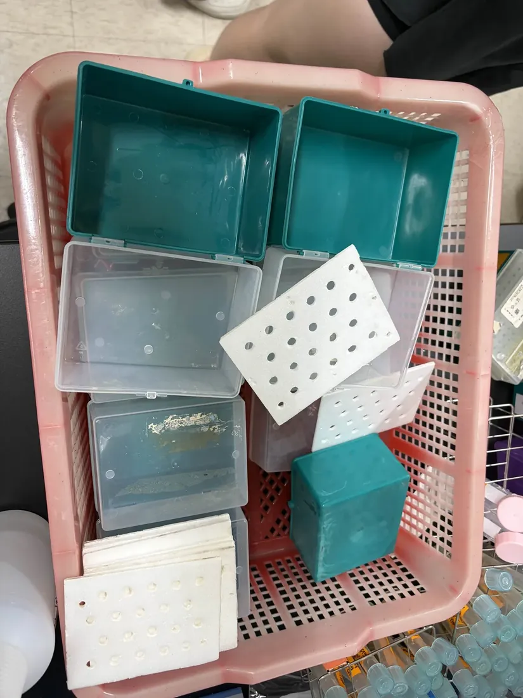
Our first prototype was adapted from Pierre Tocquin et al.’s 2003 hydroponic system for Arabidopsis thaliana. We used an opaque black box, a floating Styrofoam board, black tape, and microcentrifuge tube lids to hold the seedlings. The prototype established the basic concept, but contamination became the major limitation, preventing reliable plant growth.
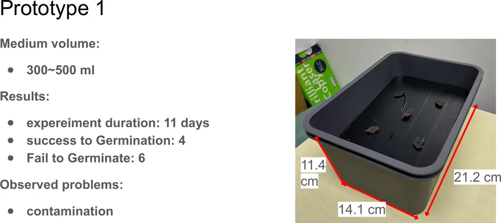
Prototype 2. We replaced the improvised container with a commercially ordered box and used 85 mL of growth medium. Only three seedlings germinated, while contamination and leakage from the growth chamber remained major problems. This showed that simply increasing the structure of the system was not enough; we needed better control of both the container and the growth environment.
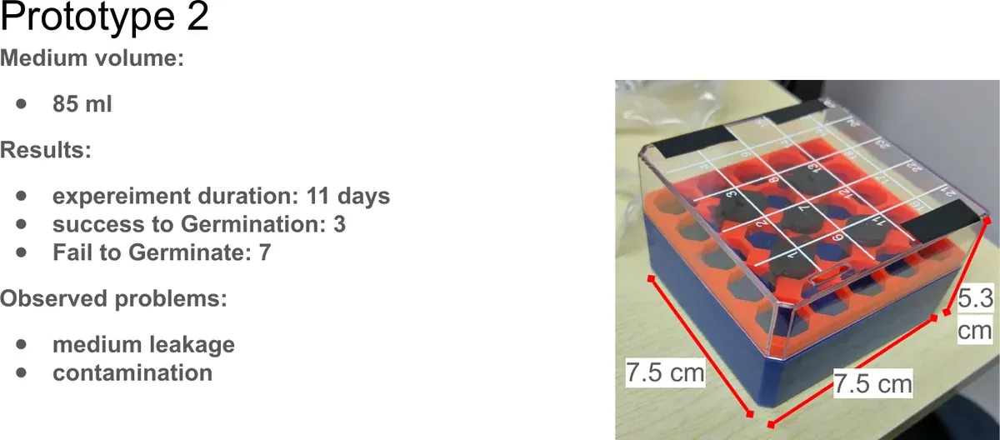
Prototype 3. We switched to a transparent box so that root growth could be observed directly and returned to a floating germination rack. However, only one seedling germinated, and contamination remained the primary obstacle. The transparent design improved observation, but did not solve the underlying growth and contamination problems.
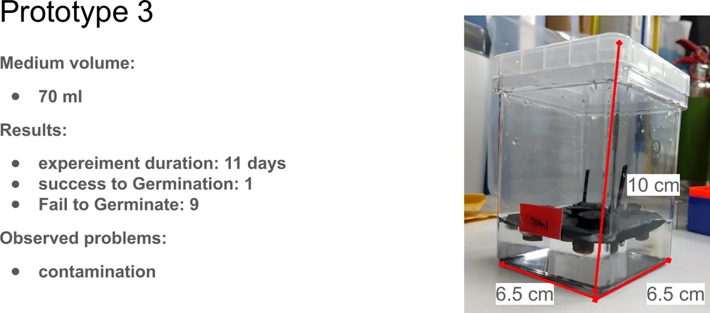
Prototype 4. We moved to a larger growth box and added zip ties on opposite sides of the floating board to improve its balance and stability. This iteration focused on making the floating platform more reliable as the system became larger.
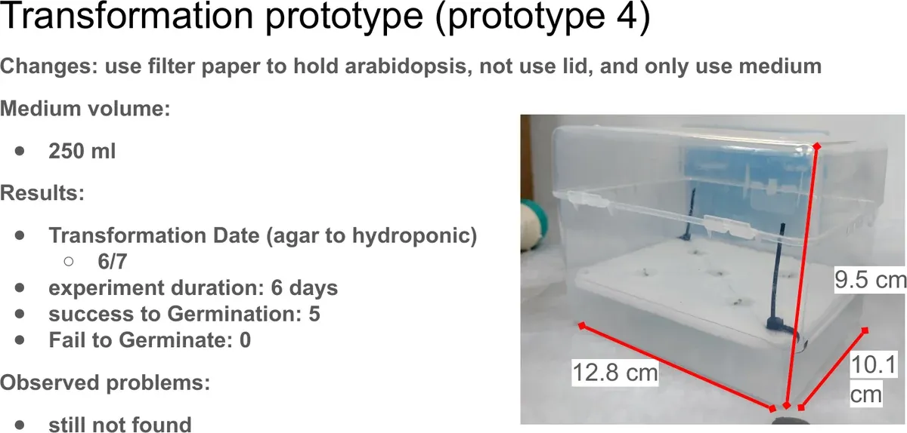
Prototype 5. We switched to Eppendorf tubes and lowered the concentration of the agar used for germination. However, the holes in the Styrofoam board were still inconsistent, and contamination continued to interfere with plant growth. At this stage, we recognized that both physical consistency and environmental cleanliness needed to be addressed.
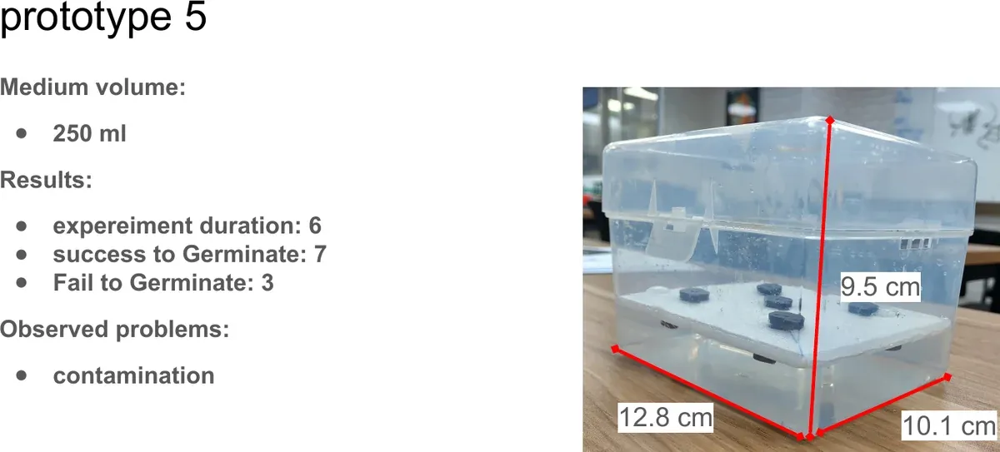
We replaced the hand-made floating board with a 3D-printed board containing uniform holes and began changing the growth medium more frequently. These changes made the system more consistent and gave us greater control over the growing conditions.
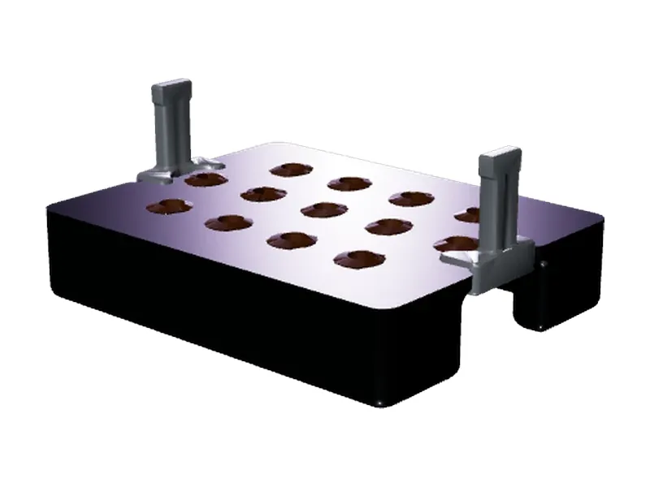
In August, we returned to Professor Cheng Mei-Chun with our updated hydroponic system and protocol. We presented the changes we had made throughout our iterations and received further feedback on our experimental conditions and plant-growth procedures. Professor Cheng subsequently adopted our design for use with her graduate students. This became an important endpoint for our iteration: rather than simply producing a system that worked for our own experiments, our design was useful enough to be adopted by another research group.
We began growing Arabidopsis thaliana on agar to create a more controlled platform for testing plant responses to stress.
Our first experiments focused on establishing a workable growing protocol. We started with two days of stratification and transferred four-day-old seedlings onto stress plates. However, inconsistent germination and frequent contamination made it difficult to obtain reliable results.
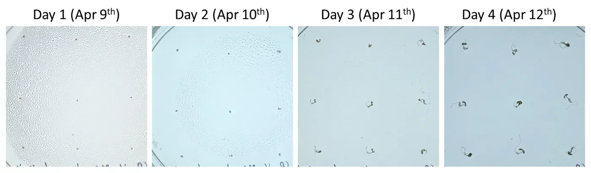
Contamination became one of our first major obstacles. We learned that seed sterilization and careful transfers were critical, and began moving transfers into the biosafety cabinet under supervision.
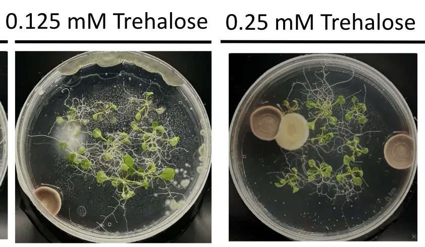
Once we could consistently grow the plants, we began testing whether trehalose could protect Arabidopsis from salt stress. Our early experiments showed that the outcome depended heavily on both the salt and protectant concentration. At some concentrations, trehalose itself inhibited plant growth, while at others, we could not observe a clear protective effect.
We also realized that simply counting how many seedlings were growing was not sensitive enough. We switched to vertical agar plates so that root growth could be traced and measured with ImageJ, giving us a quantitative readout instead of relying on visual differences.
We then tested stronger salt concentrations to find a stress level severe enough to produce a measurable response without killing the plants completely. At 250 mM NaCl, the seedlings bleached within a few days, showing us that excessive stress left no room for a protectant to demonstrate an effect.
We therefore ran a wider salt ladder at 75, 100, and 150 mM. This experiment gave us a usable stress window: 75 to 100 mM injured the plants while keeping them alive, whereas 150 mM left very little growth to rescue. We could now use this range for future protectant testing.
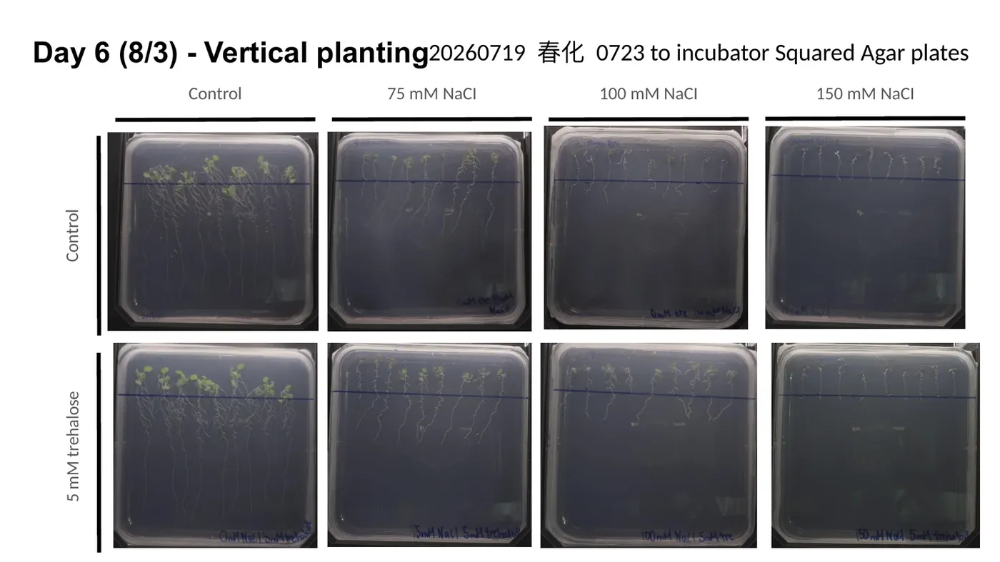
As we moved from testing the stress conditions to testing protectants, we encountered another problem: how to actually deliver the protectant to the plant. Pipetting liquid onto the plates could float seedlings off the agar, while spraying left droplets on the leaves. We eventually moved toward transferring seedlings onto fresh plates containing the treatment, allowing the dose to be controlled by the medium rather than by how much liquid remained on the plant.
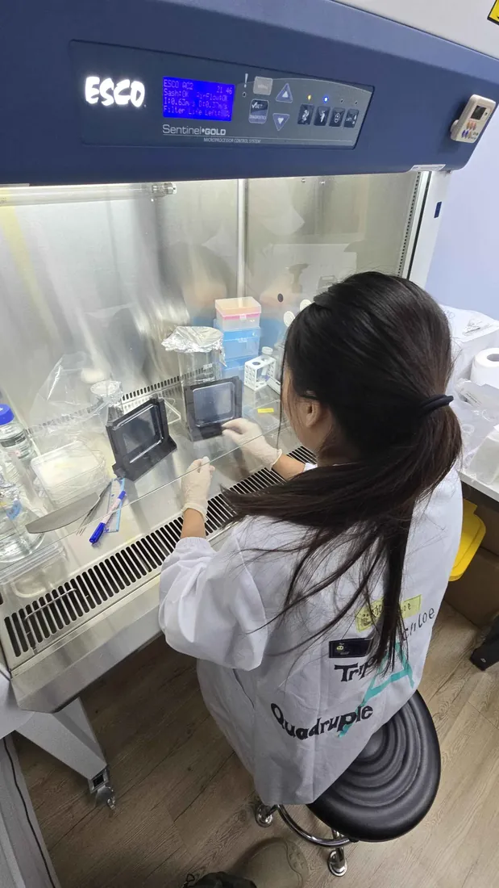
With this platform, we began testing CH Bio peptide at three different timings: before, during, and after salt stress. This was important for ReLeaf because the timing of protection would eventually determine when our bioreactor should begin producing a protectant.
We then moved toward testing one of our own intended protectants, ACC deaminase. However, both Set 8 trials were invalidated by bacterial contamination, and a Western blot also found no detectable ACC deaminase in the engineered B. subtilis. We therefore could not use these experiments as evidence that ACC deaminase protected the plants.
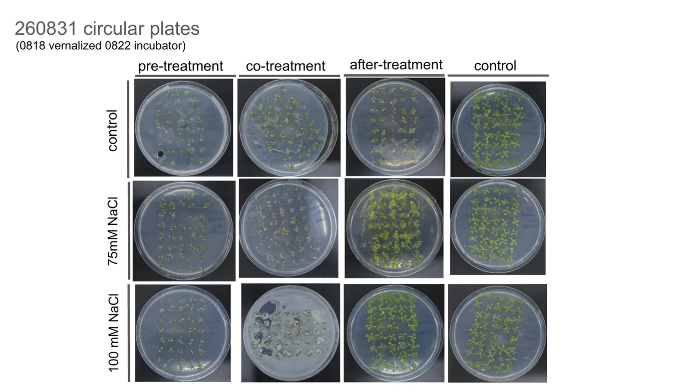
Through these iterations, the agar system became more than a way to grow Arabidopsis. It became a controlled assay with defined stress conditions, treatment timing, delivery methods, and quantitative readouts: all necessary before we could confidently determine whether a ReLeaf protectant actually works.
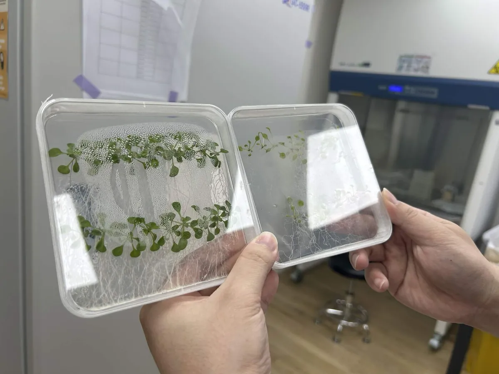
Once we decided that ReLeaf would produce protectants onsite, we needed a way to continuously culture our engineered Bacillus subtilis while separating the bacteria from the protectants they produced. We chose a hollow-fiber membrane bioreactor as our starting point: the membrane would retain the bacteria while allowing smaller molecules to pass into a separate collection stream.
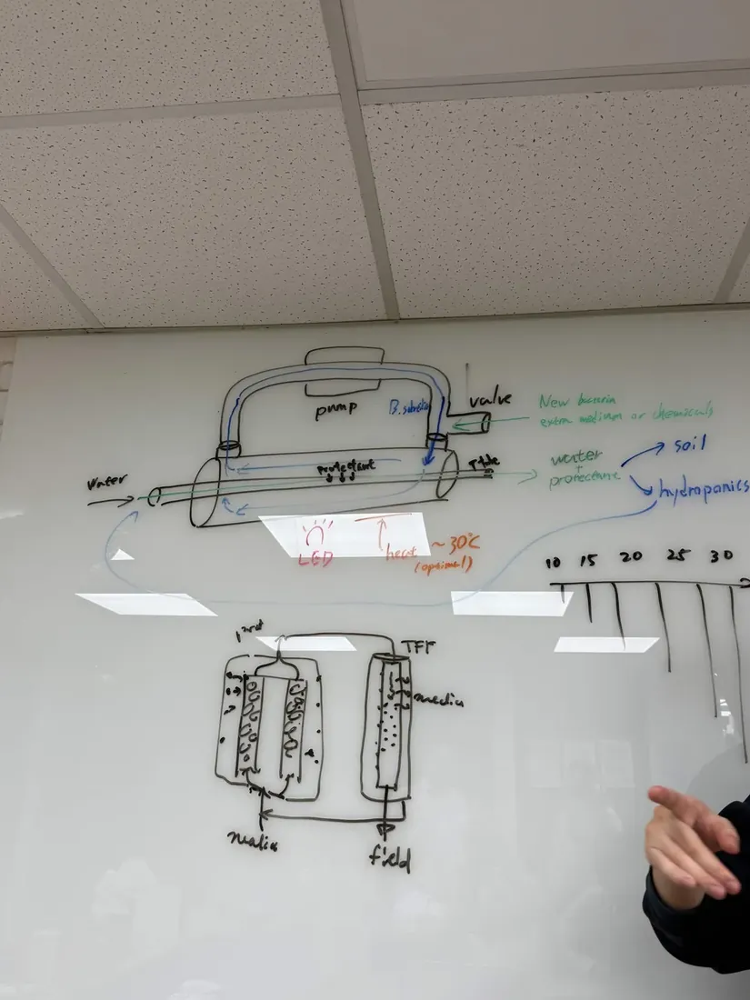
Our first prototype was built to test whether we could maintain bacterial culture while continuously perfusing medium through the hollow-fiber membrane. Rather than immediately optimizing every component, we first wanted to answer a more basic question: could the system maintain continuous flow and keep the culture contained?
The first cycle revealed several problems. A leak developed around the pump head, forcing us to stop the experiment early. We also observed differences between the OD600 measured in the tubing and in the reservoir, suggesting that the culture was not evenly mixed. These failures showed us that simply circulating the culture was not enough; the reactor also needed reliable connections and effective mixing.
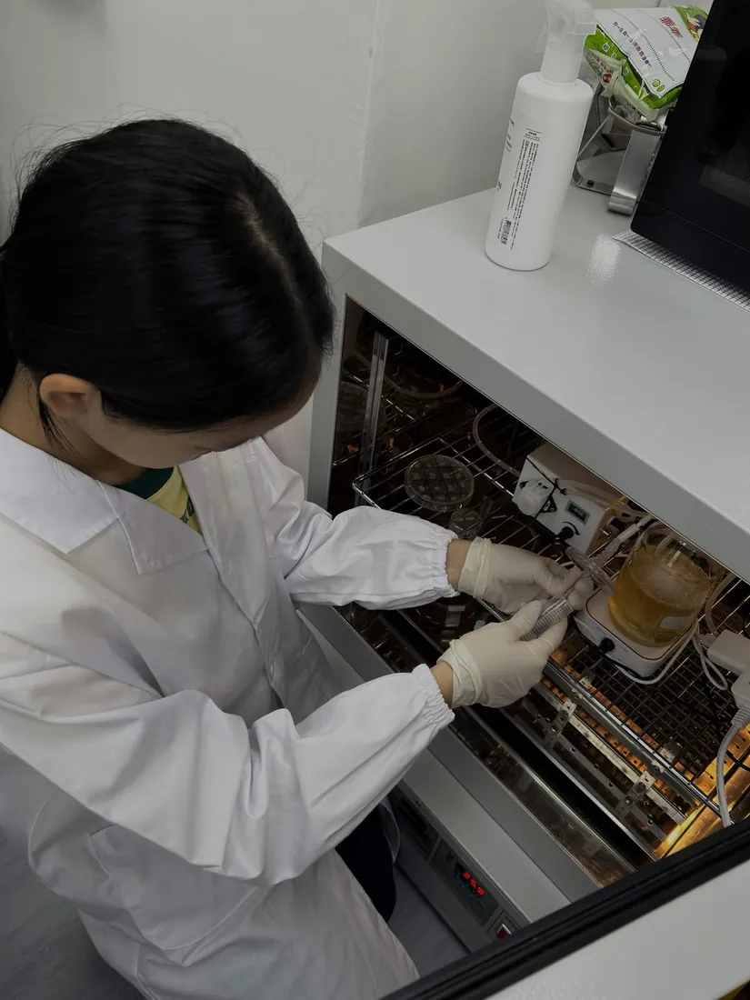
We redesigned the system for the second cycle. We improved the tubing connections, introduced magnetic stirring to reduce sedimentation, and changed the sampling location to the reservoir outlet so that measurements would better represent the culture as a whole.
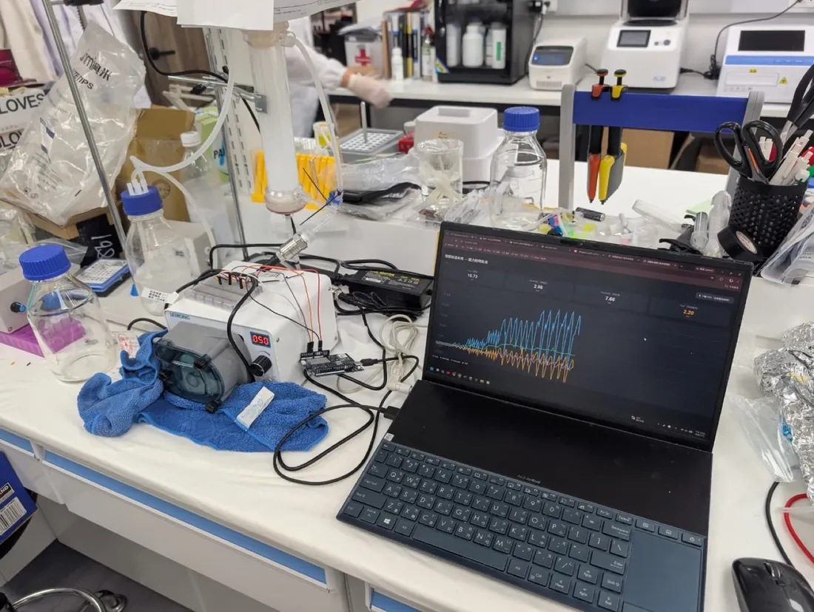
The second cycle successfully ran without the previous leakage problem and produced a complete growth curve. The culture reached an OD600 plateau of approximately 0.8 to 0.9 after around two hours. However, because multiple components had been changed between cycles, we could not determine which modification caused the improvement. This taught us that hardware iteration also needs controlled testing, not just a better-performing prototype.
We then focused on one of the most important functions of the bioreactor: keeping engineered bacteria contained. We collected medium from the shell side of the hollow fiber and plated it on LB agar. No colonies were observed in this initial test, providing preliminary evidence that the membrane was retaining the cells. However, a single test was not enough to establish reliable containment, so replicated testing remained necessary.
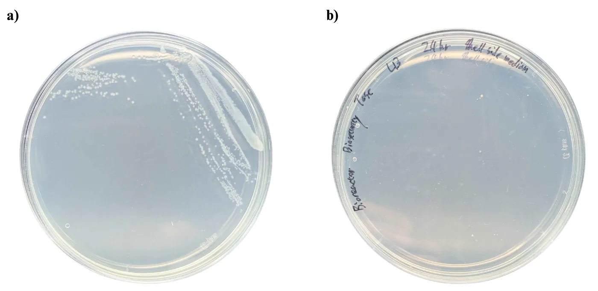
Another limitation was that monitoring the culture required sampling. To move toward a more automated system, we integrated an in-line OD600 photometer, allowing bacterial growth to be monitored directly in the closed loop without repeatedly opening the reactor.
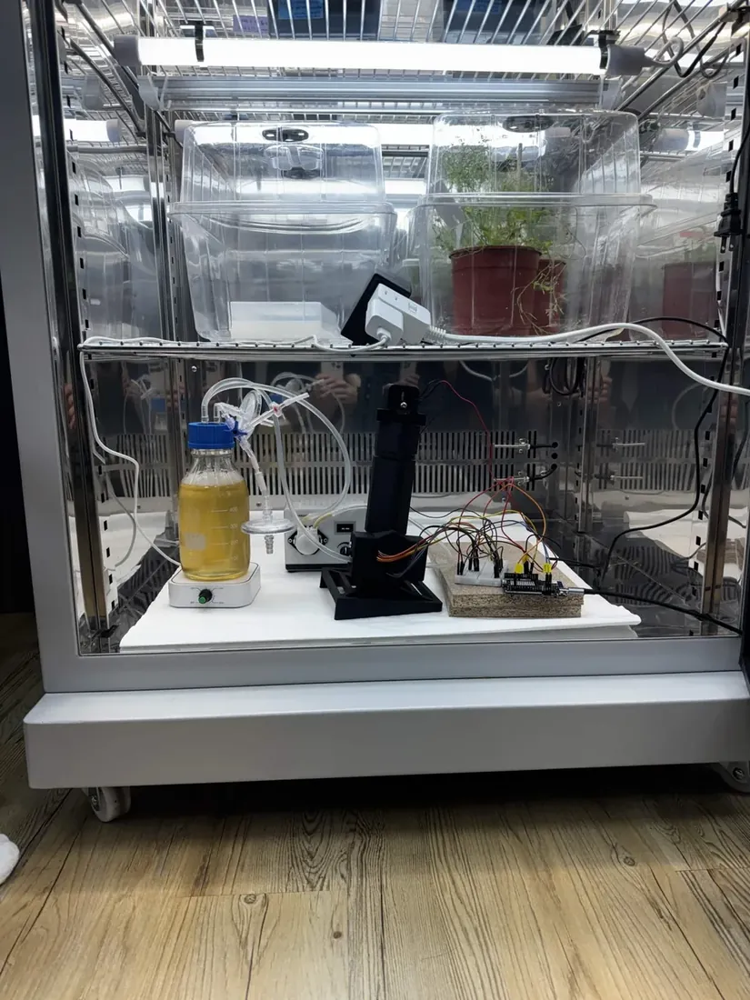
As the design developed, we began adding the sensors and controls needed for longer-term operation. The current system incorporates automated pumping, mixing, and measurements of culture conditions such as pH and dissolved oxygen, moving the reactor from a simple proof-of-concept toward a more autonomous production system.
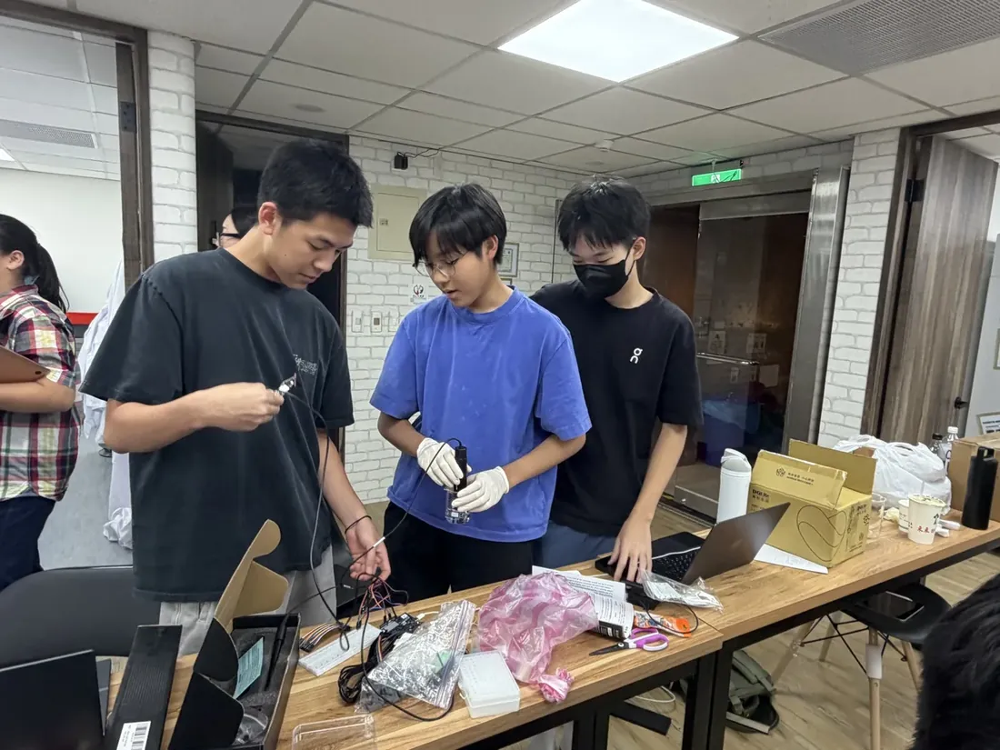
However, a functional bacterial culture was only one part of our goal. For the bioreactor to fulfill its role in ReLeaf, we still needed to demonstrate that the correct protectant is produced at a sufficient concentration, crosses the membrane, and can be collected without compromising bacterial containment or reactor operation.
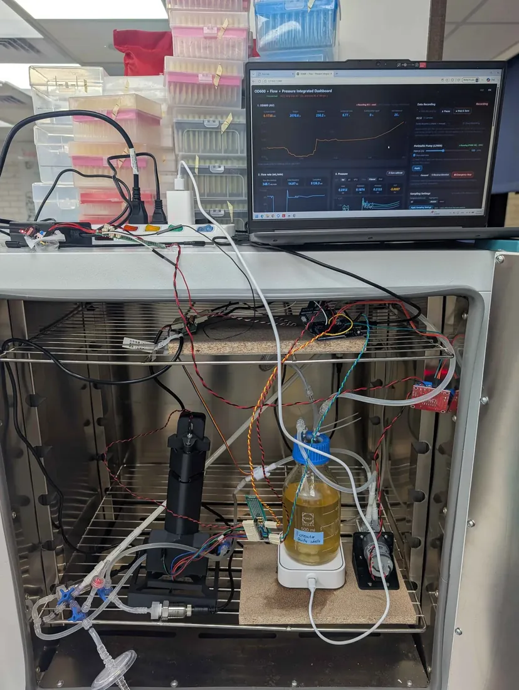
This is where the bioreactor began to connect with the rest of ReLeaf. The reactor would receive activation signals from the genetic-circuit/LED system, produce protectants in response, and ultimately connect to the delivery hardware that transfers those protectants to the plant. The bioreactor therefore became the bridge between “produce” and “deliver” in our larger system.
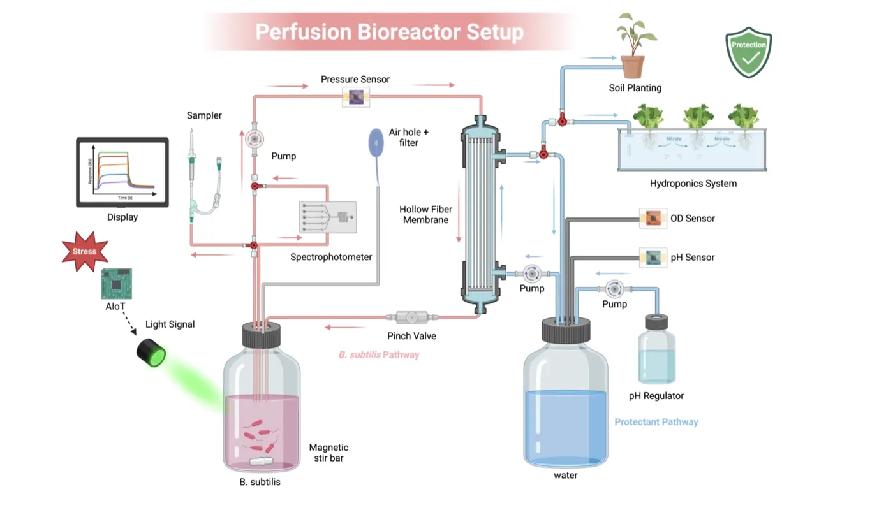
Before we could use light to control protectant production, we needed to understand how our engineered Bacillus subtilis responded to different wavelengths and intensities. We started with a simple dual-LED setup based on the idea of using green light to turn protectant production on and red light to turn it off.
Our first prototype used a dual-LED-per-column layout controlled directly from a breadboard. This established the basic idea of switching between green and red light, but it was not yet suitable for quantitative comparison. Different LEDs could produce different outputs, and the cultures were still exposed to ambient light.
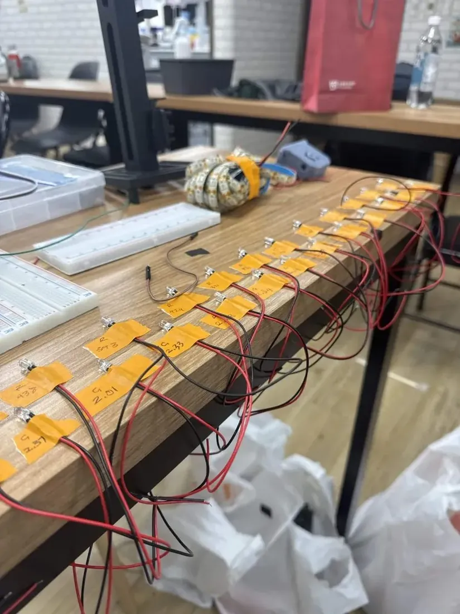
We therefore expanded the system into a 4 × 6 array, allowing us to test six light conditions with four replicates each. We introduced low, medium, and high intensity levels for both green and red light and measured the individual LEDs before selecting matched groups.
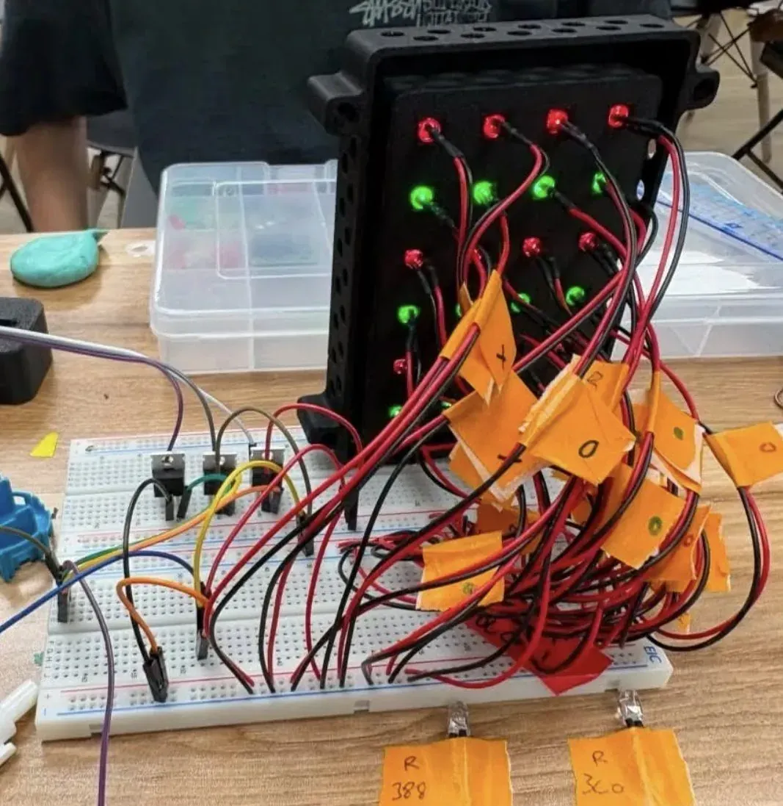
This measurement revealed another source of variation: nominally identical LEDs did not necessarily produce identical outputs. We therefore grouped LEDs with similar electrical characteristics so that the four LEDs in each experimental condition would produce more consistent illumination.
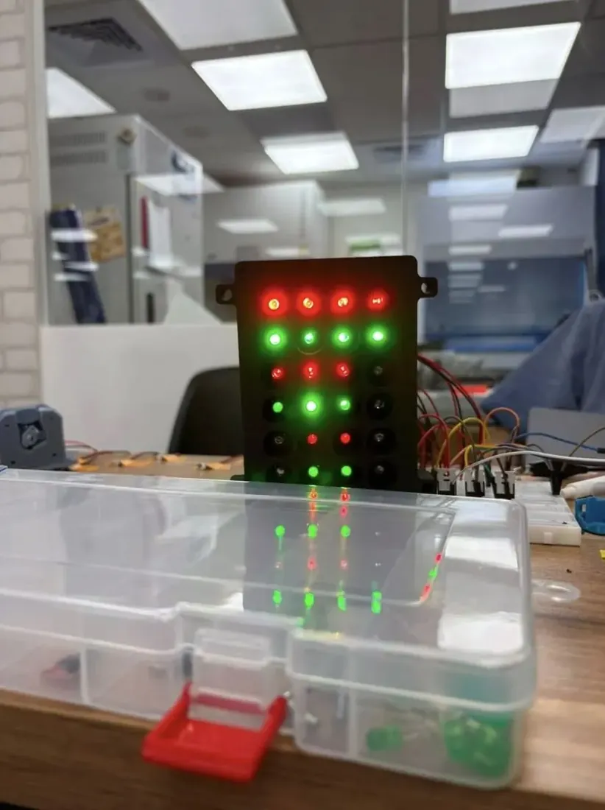
We also realized that controlling the LEDs alone was not enough. If ambient light reached the cultures, especially under low-intensity conditions, it could interfere with our comparison. We added an enclosure to shield the cultures from external light and make the applied light the controlled variable.
In our third iteration, DiOPAL became a self-contained instrument. We integrated the Arduino and electronics into an outer frame, added software-controlled intensity settings, and designed the tube holder and sliding components so that the system could be assembled and disassembled more easily.
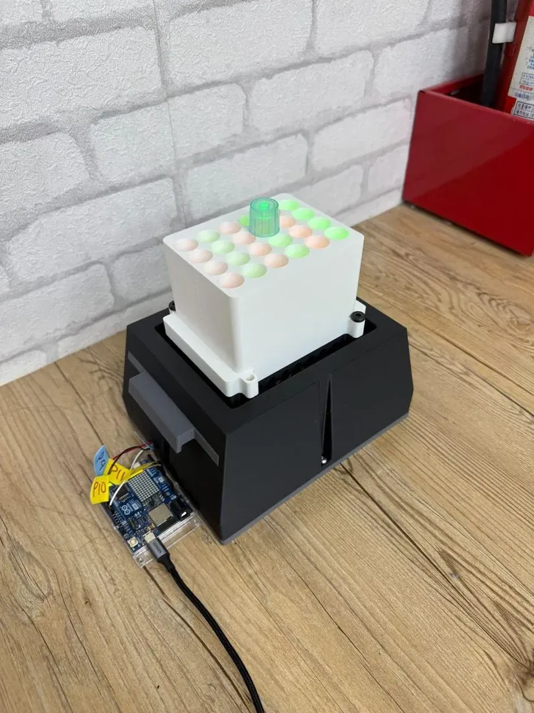
The final design allows 24 cultures to be tested simultaneously under six defined conditions: green and red light at three intensity settings, with four replicates per condition. Rather than changing the light during an experiment, each condition receives a fixed light dose throughout the run.
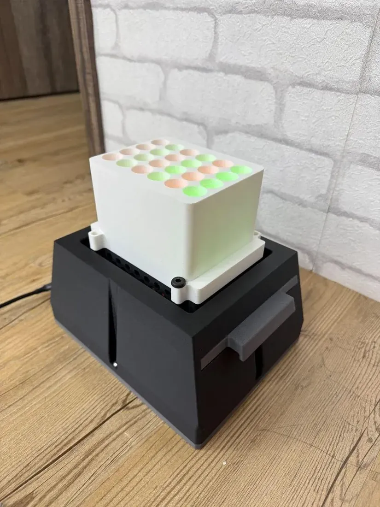
However, building a more controlled instrument also revealed a new problem: we had to make sure that the numbers we were measuring actually represented the biological light dose. Our initial measurements were recorded in lux, but lux is weighted for human vision and therefore is not an appropriate measure of photon flux for comparing the 520 nm green and 660 nm red light used by our system.
This changed our definition of what it means for DiOPAL to be functional. Having 24 LEDs turn on and produce different readings is not enough. We need to establish the actual photon flux at each condition, verify illumination uniformity between wells, and determine whether the selected conditions actually produce the expected changes in protectant expression.
DiOPAL therefore serves as the characterization stage of our production system. It helps us determine how the CcaS/CcaR light-responsive circuit behaves under different wavelengths and intensities. Those results can then inform how light should be used to control protectant production in the larger ReLeaf system.
As we developed the bioreactor, we realized that repeatedly removing samples to measure bacterial growth would interrupt the culture and make continuous monitoring difficult. We therefore designed an in-line photometer that could measure OD600 directly from the flowing culture without opening the system or withdrawing samples.
Our first prototype used a horizontal optical path with adjustable rails for the LED, lens, beamsplitter, and sensors. However, the readings fluctuated significantly. We traced this to two problems: bubbles were accumulating in the flow cuvette and passing through the light path, while the adjustable optical components could shift out of alignment.
We responded by rotating the optical path vertically and tightening the tolerances between components. This allowed bubbles to rise away from the optical path instead of remaining in the cuvette. We also added valves and syringes so that trapped air could be manually removed from the tubing.
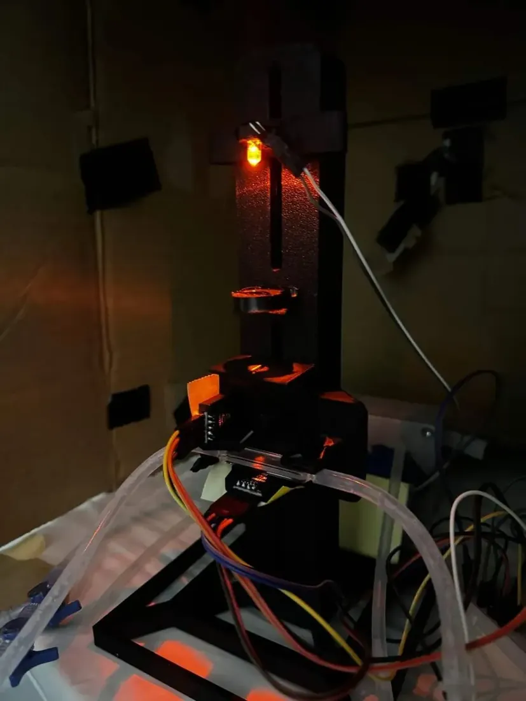
The vertical design reduced the bubble problem, but we found that bubbles could still cling to the cuvette wall. We therefore tilted the entire optical channel by 10°, allowing bubbles to move toward the outlet instead of remaining in the measurement region.
This iteration brought the difference from the Bio-Drop reference down from roughly 20% to 8% in one paired measurement. However, the LED was still not perfectly aligned with the optical path, so we continued iterating.
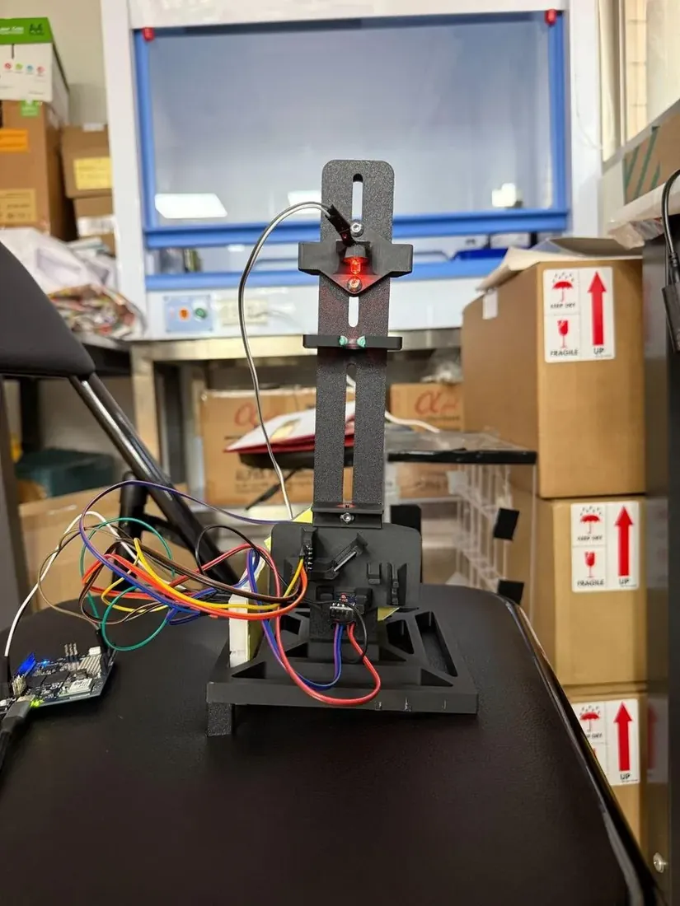
In our fourth iteration, we moved from an adjustable prototype toward a reproducible instrument. We locked the optical components into fixed positions, added TPU lining to prevent movement, enclosed the light path to block ambient light, and reinforced the angled stand so that tubing would not change its position.
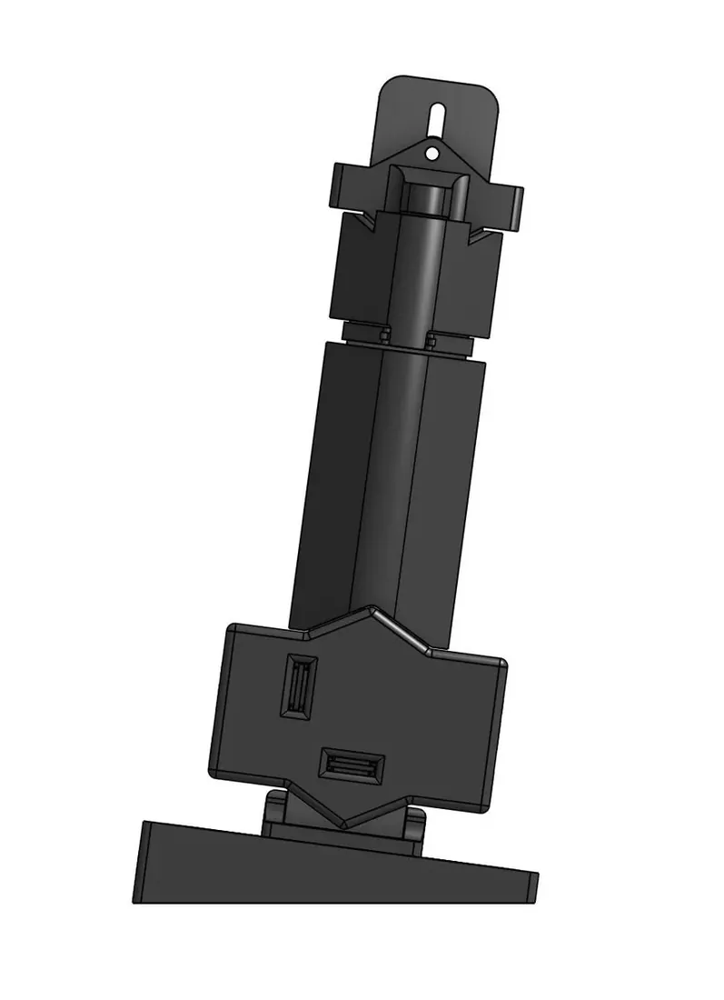
We also developed a ratiometric measurement system. Instead of relying only on the light passing through the culture, a beamsplitter sends part of the light directly to a reference sensor while the remaining light passes through the culture. Comparing these two signals allows changes in LED intensity to be accounted for, making the measurement less dependent on fluctuations in the light source.
With the physical system established, we integrated the photometer with a live dashboard. The system records the sample and reference signals, calculates their ratio, reports OD600, and continuously logs measurements. We also developed a bubble-rejection system so that brief disturbances caused by bubbles would not automatically become biological data.
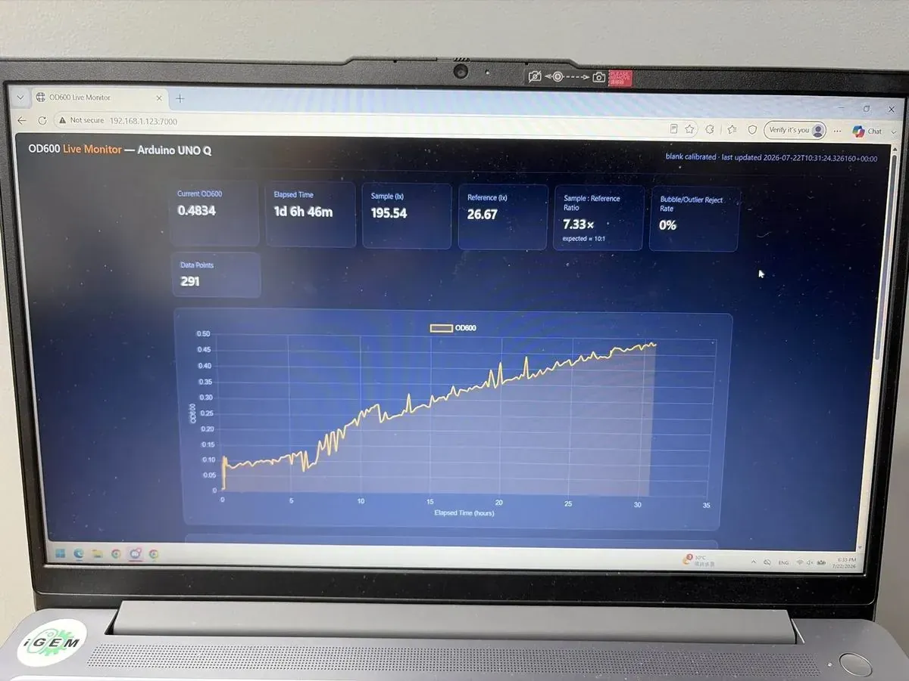
We then tested whether the photometer could operate continuously rather than simply produce individual measurements. Over 336 hours, the instrument logged 2,132 measurements without withdrawing a single sample. During the run, the photometer even captured a sudden change caused by a recirculation-pump failure, demonstrating that continuous monitoring could reveal problems that would otherwise occur between manual measurements.
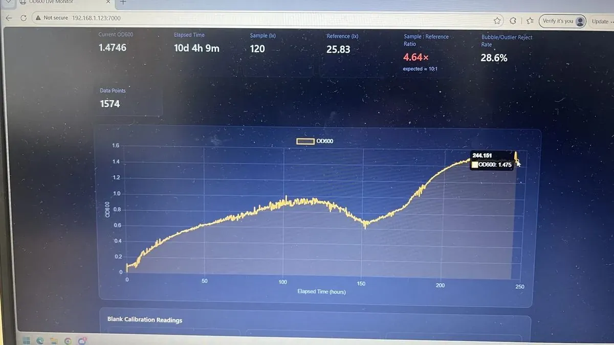
However, the long-term run also showed us that collecting continuous data was not the same as proving that the data were accurate. Our final build has not yet passed independent accuracy validation: one comparison with the Bio-Drop was 33% low, and additional calibration repeats and a dilution series are still needed. We also identified unresolved questions about fouling, temperature effects, and linearity at higher cell densities.
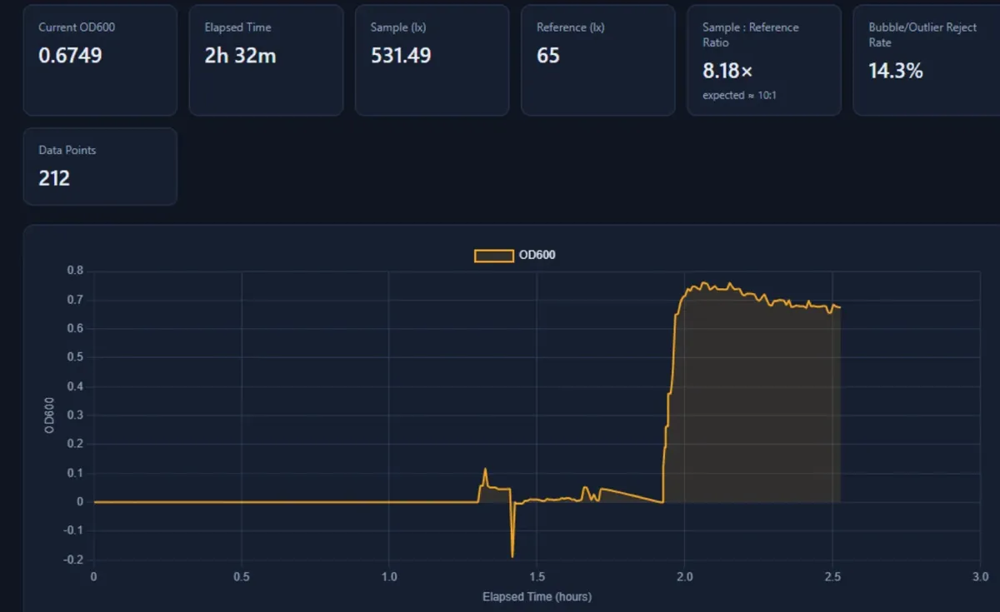
This changed our definition of success. The goal was no longer simply to build a sensor that could produce an OD value, but to create a reproducible, continuously operating measurement system whose readings can be trusted.
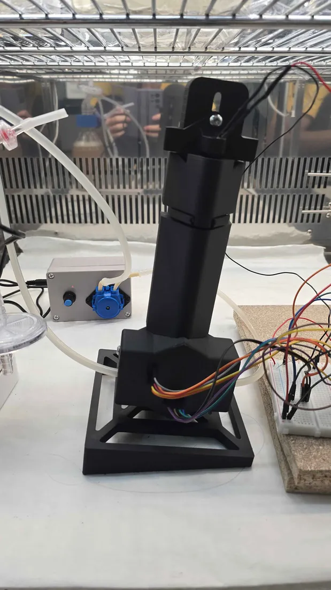
Finally, the photometer became part of the larger bioreactor system. Instead of periodically opening the reactor to ask “How much have the bacteria grown?”, the integrated system can monitor the culture continuously while it remains in operation. This gives the bioreactor a way to observe its own state without disrupting the production process.
Our goal was to make Bacillus subtilis produce ACC deaminase (ACCD) in response to a controllable signal. This would allow ReLeaf to connect stress detection with on-demand protectant production, rather than producing ACCD continuously.
We designed the circuit around a light-responsive system, with the signal ultimately controlling expression of the ACCD gene. This gave us the basic logic of ReLeaf’s production stage: light signal → genetic circuit → ACCD production.
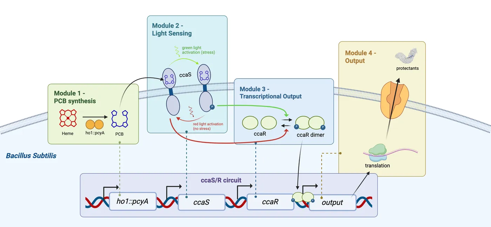
Our first attempts focused on getting the genetic components into B. subtilis and establishing a strain that could carry the production system. At this stage, however, having the correct DNA construct did not yet mean that the bacteria were producing detectable ACCD.
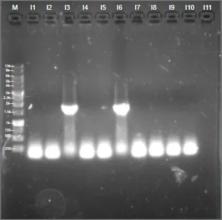
We therefore began separating the problem into smaller questions. First, we needed to determine whether the genetic circuit responded to its input signal. Then, we needed to determine whether that response actually resulted in ACCD expression.
Early characterization revealed that circuit activation and protein production could not simply be assumed from one another. A visible response to the input signal would only demonstrate that the circuit was responding; we still needed direct evidence that ACCD was being produced.
We then attempted to verify ACCD production directly. However, our later plant experiment revealed an important problem: the engineered B. subtilis did not show detectable ACCD in the Western blot. Without detectable ACCD, we could not conclude that the bacteria had successfully produced the protectant at a level that could explain a plant response.
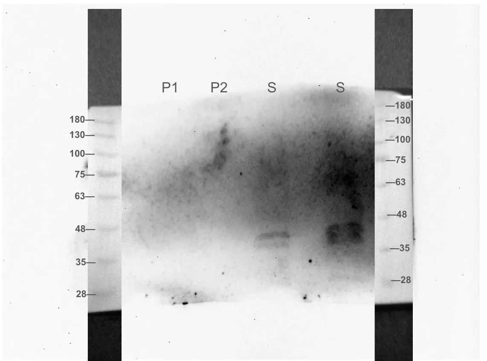
This became especially important when we tested the engineered bacteria with Arabidopsis. The experiment was also affected by bacterial contamination, meaning that we could not use the plant results to claim that ACCD protected the plants. We were left with two separate questions that still needed to be answered: did the circuit activate correctly, and did that activation produce enough functional ACCD?
This changed how we defined success for the production system. A successful genetic circuit could not simply mean that the DNA was present or that the cells received a light signal. We needed evidence at every stage: signal response → ACCD expression → ACCD activity → sufficient production → measurable plant protection.
This also connected the genetic circuit to our hardware. DiOPAL provides the controlled light input, while the bioreactor provides the environment for bacterial growth and production. Together, they form the production stage of ReLeaf: DiOPAL controls the signal, the genetic circuit interprets it, and the bioreactor provides the platform for producing ACCD.
We started with the question “What should we test?” At first, the project was broad, with multiple stresses, Medicago, hydroponics, and several possible ways of testing plant responses. Dr. Lin pushed us to consider real plant applicability and rethink the target plant, while Prof. Cheng gave us a more controllable experimental path with Arabidopsis and early-stage agar growth.
Next, we asked “What should the bacteria actually do?” Our original concept leaned toward delivering protective compounds such as proline/trehalose. Dr. Verslues challenged that approach by emphasizing the plant’s natural stress-response mechanisms and the importance of detecting stress early rather than simply trying to recover from it.
IterationSupply protection after stressUse bacterial products/signals to influence plant stress responses earlier
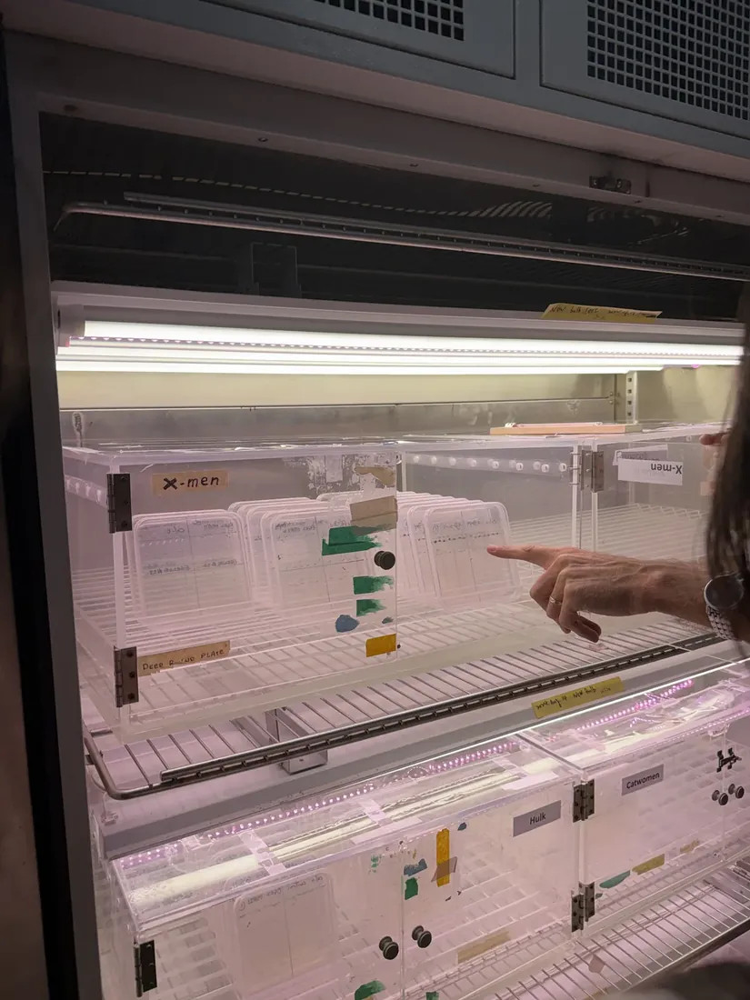
“Where should production happen?” Prof. Chen introduced the idea of treating the hardware as a “printer” and the biofertilizer as the “ink,” pushing us toward clear input-output relationships and a controlled bioreactor rather than releasing engineered bacteria into soil. Dr. Brophy strengthened that design from a biosafety perspective: physical containment should be the primary safety mechanism rather than depending on a kill switch. This led directly toward our membrane-based containment strategy.
IterationEngineered bacteria interacting directly with the environmentContained production system + protectant delivery
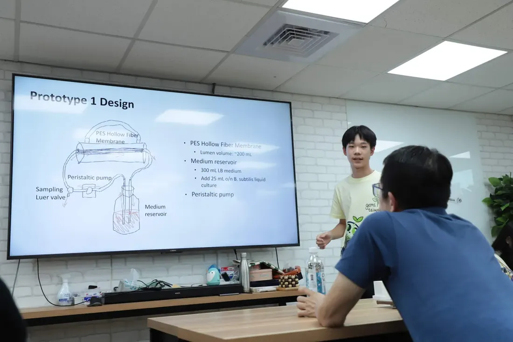
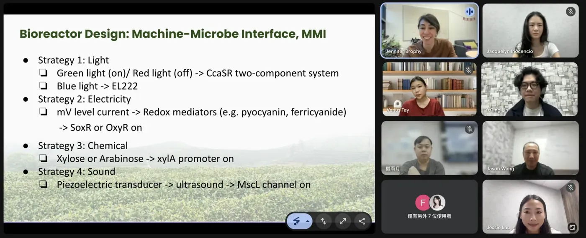
“Does the protectant itself actually work?” By June, we were already thinking about integrating protectant production into the bioreactor. Dr. Sattely made us step backward: validate the protectant before integrating it into the entire system. She also encouraged us to focus on fewer stresses and establish clearer goals and measurable outcomes.
IterationBuild the complete system firstValidate the biological output before integration
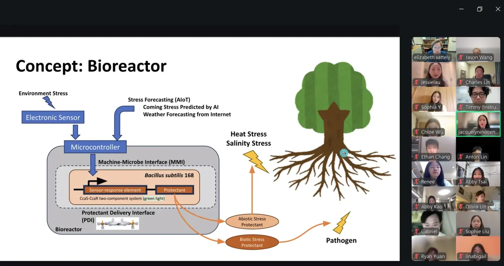
“How do we know the system actually works together?” Later consultations increasingly focused on dosage, timing, delivery, modeling, and validation, rather than just individual components. Prof. Chen emphasized connecting experimental data and modeling through feedback loops. CH Biotech pushed us to demonstrate actual plant performance under stress and consider different delivery methods and practical constraints. Prof. Huang then highlighted that effectiveness depends on how much protectant reaches the plant, when it arrives, and how often it is applied.
IterationCan each component work?Can the components produce the right output, at the right amount, at the right time, in the right place?
“How do we prove what we are claiming?” Our latest consultations become much more about experimental rigor and interpretation. Prof. Huang pointed out that protein quantity alone isn’t enough; we need to consider identity, solubility, and function together. Prof. Cheng helped us recognize that experimental conditions themselves can create stress and therefore need to be standardized. Our September meeting with Dr. Sattely and Prof. Endy brought everything together: distinguish the engineered bacteria from the protectant, demonstrate actual ACCD production/secretion, strengthen controls, and make clear what each experiment proves.
IterationCollect resultsBuild evidence that clearly demonstrates what each result means
ReLeaf validation
After multiple rounds of testing and iteration across several systems, we
returned to the question at the beginning: Does ReLeaf work as a complete system?
The final ReLeaf system
Figure 3. The working system: the perfusion bioreactor running in the incubator, with the inline photometer in the loop.Figure 4. The same system packaged as one unit, rendered with its side panel open.
The final system brings together the components developed across the project.
Rather than evaluating these components independently, we now evaluate whether
they form a continuous and functional chain, from detecting plant stress to
activating production, producing and containing the protectant, delivering it to
the plant, and ultimately reducing the effects of stress.
Criteria validation
Near the end of our project, we compared our quantified results with the success
criteria table we previously established.
Met0
Preliminary6
Not yet shown3
Awaiting data18
The success criteria again, with the result so far for each.
Functional requirement
Acceptance criteria
Result so far
Current status
1Detect4 criteria
Sensors can identify target environmental stresses
Sensor correctly identifies the presence/absence of the target stress with ≥90% accuracy across predefined test conditions.
No sensor accuracy test is reported in the drafts yet.
Awaiting data
Detect stress consistently, produce repeatable readings under the same conditions
Repeated measurements under identical conditions have CV ≤10%.
No repeated sensor measurements reported yet.
Awaiting data
Detect stress within a useful timeframe
Stress detection occurs within a timeframe that still allows the downstream system to respond before the intended treatment window closes. Target: ≤60 sec.
No time-series sensor data reported yet.
Awaiting data
Distinguish stress severity, sensor output changes appropriately with increasing stress
Sensor signal shows a monotonic and reproducible relationship with at least 3 predefined stress levels.
No test across stress levels reported yet.
Awaiting data
2Activate4 criteria
Convert stress information into the correct activation signal
The system activates under predefined stress conditions and remains inactive under predefined non-stress conditions. ≥90% correct activation decisions across test conditions.
No sensor-to-controller integration test reported yet.
Awaiting data
Activate within an appropriate timeframe
Detection-to-activation delay is ≤3 min.
No controller logs reported yet.
Awaiting data
Produce the intended light signal, with required wavelength and intensity
Wavelength range of green light is 525 nm ±30 nm. Wavelength of red light is 660 nm ±30 nm.
DiOPAL uses 520 nm green and 660 nm red LEDs, both inside the ranges. The emitted light has not been measured yet.
Preliminary
Maintain activation reliably, light signal remains within required range during operation
Light intensity does not vary by over 10%.
Early readings were taken in lux, which does not measure photon flux. Photon flux and uniformity between wells still have to be established.
Not yet shown
3Produce5 criteria
Engineered bacteria respond to the light signal
Band size of LPA testing samples matches the according protectant. Statistically significant increase in protectant concentration under the activating condition
No induced versus non-induced comparison reported yet.
Awaiting data
Produce the intended protectant
Detectable target protein above the assay’s validated detection limit
A faint band near the expected 42 kDa in a Western blot from the bioreactor run with constitutive ACCD. An earlier blot of the engineered strain showed no detectable ACCD.
Preliminary
Produce the right amount of protectant
Production reaches the minimum concentration required at the plant, after accounting for downstream transfer/dilution.
The weak band suggests the total ACCD yield was likely low. The minimum concentration needed at the plant is not fixed yet.
Not yet shown
Production is controllable, changes appropriately with activation conditions
Activating condition produces significantly greater production than non-activating controls
Needs the light-induced construct run under green, red and no-light conditions.
Awaiting data
Production remains stable, output does not substantially decline during intended operating period
Production remains within ≥80% of initial output over the intended operating period.
No long-duration production run reported yet.
Awaiting data
4Contain4 criteria
Retain engineered bacteria inside the bioreactor
No detectable viable engineered cells in the output stream above the assay’s validated detection limit.
No colonies grew when shell-side medium was plated on LB agar. One test only; replicates are still needed.
Preliminary
Maintain membrane integrity
No evidence of membrane failure, abnormal leakage, or loss of containment during the intended operating period.
Cycle 2 ran without the pump-head leak that ended Cycle 1. No dedicated pressure and flow integrity test is reported yet.
Preliminary
Maintain containment over time, no leakage
Containment criterion is satisfied throughout the entire intended run.
No multi-day containment test reported yet.
Awaiting data
Prevent contamination of the output stream
A membrane/flow/pressure abnormality or downstream biological signal can be detected before continued operation creates a larger problem.
During its 336 h run the inline photometer caught a sudden change caused by a recirculation-pump failure. No downstream culture test reported yet.
Preliminary
5Deliver5 criteria
Protectant crosses the membrane
Target protectant is detectable and quantifiable on the output side of the membrane.
A faint ACCD band in samples from the bioreactor output pathway. Detected, not yet quantified.
Preliminary
Deliver sufficient protectant
Output concentration reaches the minimum plant-effective concentration established from plant experiments/literature.
The plant-effective concentration has not been established yet.
Awaiting data
Deliver consistently, output does not fluctuate beyond acceptable range
Not yet defined
Criterion still to be set.
Awaiting data
Maintain delivery during operation, transfer does not deteriorate substantially during a run
Delivery concentration remains within ±20% of the intended operating range during steady-state operation.
No time-course sampling reported yet.
Awaiting data
Deliver at an appropriate rate, protectant reaches plant quickly enough relative to stress progression
A measurable and reproducible fraction of produced protectant reaches the output stream. Target: ≥50% transfer efficiency could be a starting proposal.
No flow and concentration measurements reported yet.
Awaiting data
6Protect5 criteria
Protectant reaches the plant at an effective dose, produces a measurable biological effect
Treated stressed plants show a statistically significant improvement in at least one predefined primary plant-health metric compared with stressed untreated controls.
Both Set 8 trials with ACCD were invalidated by contamination, so there is no valid ACCD plant result yet.
Not yet shown
Improve plant performance
Treatment produces at least a 20% improvement relative to the stressed control in the primary metric, unless literature or baseline variability supports another threshold.
Waiting on a valid protectant trial.
Awaiting data
Protection is dose dependent or otherwise predictable
Not yet defined
Criterion still to be set.
Awaiting data
Timing is appropriate, affects protection in a useful/appropriate way
At least one treatment dose/timing condition produces a reproducible protective effect, and the relationship between dose/timing and response is characterized sufficiently to identify an effective operating range.
Set 7 tested CH Bio peptide before, during and after salt stress. Its outcome is not written up in the drafts yet.
Awaiting data
Effect is reproducible
The protective effect is observed across independent biological replicates/experiments.
Needs independent replicate experiments.
Awaiting data
What counts as success?
Our success criteria provide a concrete definition of what it means for ReLeaf
to function. When the evidence demonstrates that each critical stage performs its
intended function and connects to the next stage, we consider the ReLeaf system
successfully validated against its current design goals.
This does not mean that ReLeaf is a finished or fully optimized technology. A
successful system can still be made more efficient, reliable, scalable, or
accessible. Instead, validation establishes that the fundamental pathway we
designed, from Detect → Activate → Produce → Contain →
Deliver → Protect, can function as intended.
In this way, our failures were not endpoints, but measurements that guided the
system toward function. The final ReLeaf system represents not the end of
development, but a validated foundation for further improvement.